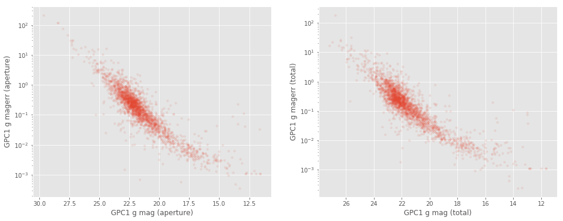
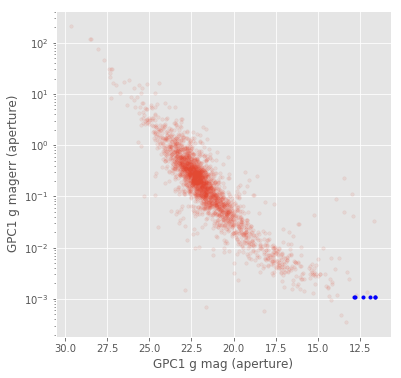

Python_(herschelhelp_internal)
xxxxxxxxxxMaster catalogue used: __master_catalogue_spire-nep_20171122.fits__<br>Number of rows: 2,674<br>Surveys included:<br>| Survey | Telescope / Instrument | Filters (detection band in bold) | Location ||------------|-----------------------------|:------------------------------------------:|-----------------------------|| PS1 3PSS | Pan-STARRS1 | grizy | dmu0_PanSTARRS1-3SS |__NB: On the SPIRE-NEP field, only PanSTARRS observations are available. We can then compared with other surveys to find outliers or look at the difference in aperture correction between point-source and extended objects.__Master catalogue used: master_catalogue_spire-nep_20171122.fits
Number of rows: 2,674
Surveys included:
| Survey | Telescope / Instrument | Filters (detection band in bold) | Location |
|---|---|---|---|
| PS1 3PSS | Pan-STARRS1 | grizy | dmu0_PanSTARRS1-3SS |
NB: On the SPIRE-NEP field, only PanSTARRS observations are available. We can then compared with other surveys to find outliers or look at the difference in aperture correction between point-source and extended objects.
xxxxxxxxxxAt faint magnitudes (mag > 24), few __PanSTARRS__ sources have very large errors on their __aperture and total __magnitudes. These objects may be unreliable for science puposes.<br><img src="help_plots/SPIRE-NEP_magVSmagerr_GPC1_g_mag_total.png" />At faint magnitudes (mag > 24), few PanSTARRS sources have very large errors on their aperture and total magnitudes. These objects may be unreliable for science puposes.

xxxxxxxxxx### I.b. Aperture correctionsOn SPIRE-NEP there are no sources with multiple aperture magnitudes. We then cannot look for difference in aperture correction between point-source and extended objects for different surveys.On SPIRE-NEP there are no sources with multiple aperture magnitudes. We then cannot look for difference in aperture correction between point-source and extended objects for different surveys.
xxxxxxxxxx### II.a. Pan-STARRS aperture magnitudeFew Pan-STARRS sources have exactly the same error (of <font color='blue'>0.0010860000038519502</font>) on the __aperture and total__ magnitudes in all the grizy bands. The corresponding aperture magnitude should not be trusted for these objects.<br><img src="help_plots/SPIRE-NEP_gpc1Issues_GPC1_g_mag_aperture.png" />Few Pan-STARRS sources have exactly the same error (of 0.0010860000038519502) on the aperture and total magnitudes in all the grizy bands. The corresponding aperture magnitude should not be trusted for these objects.

xxxxxxxxxx### II.c. OutliersThere are no bands with multiple observations, we then cannot flag outliers in this field.There are no bands with multiple observations, we then cannot flag outliers in this field.